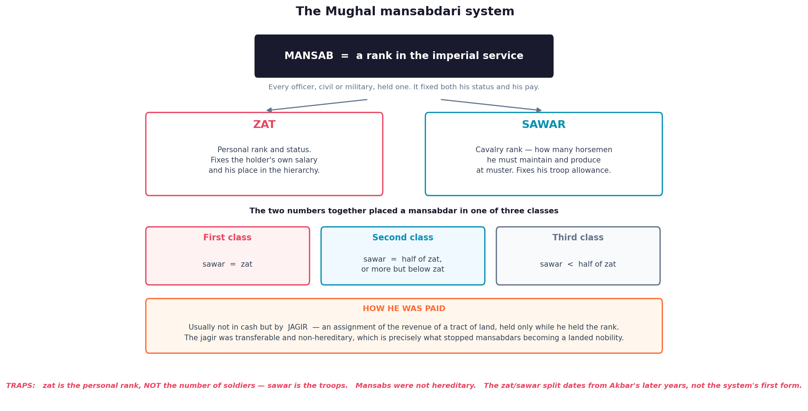

The empire ran formally from Panipat (1526) to 1857; the examined core is 1526–1707. Questions test the sources, the administrative vocabulary (zat, sawar, jama, hasil, polaj, parauti), the sequence of Akbar's religious measures, and the Bihar theatre: Ghaghra, Chausa, Sasaram, Patna.
A. The sources — and their biases
The dynasty wrote about itself, so the court chronicles are panegyric. Knowing who stood inside the court and who outside it is the exam skill.
| Work | Author | Point to remember |
|---|---|---|
| Tuzuk-i-Baburi (Baburnama) | Babur | In Chagatai Turkish, later put into Persian by Abdur Rahim Khan-i-Khanan. Trap: not composed in Persian. |
| Humayun-nama | Gulbadan Begum, Babur's daughter | Only major Mughal chronicle by a woman, written at Akbar's request. |
| Akbarnama / Ain-i-Akbari | Abul Fazl | Official history; the Ain is its third volume — a gazetteer of subas, mansabs, prices, wages. Openly panegyric. |
| Muntakhab-ut-Tawarikh | Badauni | The hostile counterweight — an orthodox scholar inside the court, writing secretly against Akbar. |
| Tuzuk-i-Jahangiri | Jahangir, continued by Mutamad Khan | The emperor's own memoir. |
| Travels in the Mogul Empire | Bernier, French physician | Claimed there was no private property in land — seed of "Oriental despotism". |
| Travels in India | Tavernier, French gem merchant | Best commercial source; described the Peacock Throne. |
| Storia do Mogor | Manucci, Venetian | Served in Dara Shikoh's artillery; vivid on Aurangzeb's court. |

B. Babur (1526–30) — four battles in four years
A Timurid of Fergana, descended from Timur through his father, Chingiz Khan through his mother; he took Kabul in 1504 and the title Padshah in 1507.
| Battle | Date | Opponent | Significance |
|---|---|---|---|
| First Panipat | 21 April 1526 | Ibrahim Lodi | Ended the Delhi Sultanate; first decisive use of field artillery and matchlocks in India. |
| Khanwa | 17 March 1527 | Rana Sanga and a Rajput confederacy | The battle that really decided Hindustan; Babur declared a jihad, remitted the tamgha tax, took the title Ghazi. |
| Chanderi | January 1528 | Medini Rai | Ended Rajput resistance in Malwa. |
| Ghaghra | 6 May 1529 | Afghans under Mahmud Lodi with Nusrat Shah of Bengal | Fought in Bihar at the Ghaghra–Ganga confluence; broke Afghan power in the east. |
Panipat 1526 → Khanwa 1527 → Chanderi 1528 → Ghaghra 1529. Consecutive years; Ghaghra is the Bihar one.
C. Why Babur won — tactics, not numbers
- Ottoman (Rumi) device: carts lashed together into a mobile barricade, loopholes for matchlockmen, gaps for cavalry; his gunners Ustad Ali Quli and Mustafa Rumi came from that tradition.
- Tulughma: army split into subdivided wings, flanking units swinging round to strike the rear.
- Artillery's value lay less in killing than in panicking elephants and disordering a mass formation.
- Enemy weakness: Lodi's nobles were disaffected; the Khanwa confederacy had no unified command.
D. Humayun (1530–40, 1555–56)
- He inherited an unconsolidated conquest, an empty treasury and three brothers with claims — Timurid partition practice crippled him.
- Chausa, 26 June 1539 (modern Buxar district, Bihar): Sher Khan destroyed the Mughal camp on the Ganga; Humayun escaped by swimming, and the victor took the title Sher Shah.
- Kannauj (Bilgram), 17 May 1540: the decisive defeat, beginning fifteen years of exile. Akbar was born at Amarkot in 1542; Humayun took refuge with Shah Tahmasp of Persia.
- Restoration 1555: with Persian help and Bairam Khan's generalship he beat the Surs at Sirhind and retook Delhi, dying in January 1556 in a fall from his library staircase in the Sher Mandal.
E. The Sur interregnum (1540–55) — outline
Sher Shah Suri, born Farid Khan, son of a jagirdar of Sasaram (Rohtas district, Bihar), ruled 1540–45 and died besieging Kalinjar. Detail belongs to Topic 142; the outline matters because Akbar built on it.
| Reform | Content | Mughal afterlife |
|---|---|---|
| Land revenue | Measurement, classification by fertility, a schedule of rates (rai), state share about one-third of produce; patta to the peasant, qabuliyat from him. | Ancestor of Akbar's zabti, run by Todar Mal, who had served the Surs. |
| Currency | Standardised silver rupiya and copper dam. | Ancestor of the modern rupee. |
| Roads and sarais | Sadak-i-Azam (Grand Trunk Road) from Sonargaon in Bengal to the north-west frontier, with some 1,700 sarais doubling as dak chauki post stages. | Extended by the Mughals; it carried Patna's trade. |
| Army | Direct payment of soldiers, with dagh (branding) and chehra (descriptive roll) against muster fraud. | Revived by Akbar inside mansabdari. |
F. Akbar (1556–1605) — regency and conquest
Enthroned at Kalanaur aged thirteen. The regent Bairam Khan (1556–60) won the Second Battle of Panipat, 5 November 1556 against Hemu (Hemchandra Vikramaditya), the Sur general who had taken Delhi and was winning until an arrow struck his eye. The harem party around Maham Anga dominated to 1564.
| Year | Conquest | Note |
|---|---|---|
| 1561 | Malwa | Baz Bahadur defeated. |
| 1564 | Gondwana | Death of Rani Durgavati. |
| 1568–69 | Chittor, Ranthambhor, Kalinjar | Chittor: Jaimal and Patta, the third jauhar. |
| 1572–73 | Gujarat | First seaport access; marked by the Buland Darwaza. |
| 1574–76 | Bihar and Bengal | Munim Khan took Hajipur and Patna from Daud Khan Karrani (1574); Bengal followed after Rajmahal (1576). |
| 1585–95 | Kabul, Kashmir, Sind, Orissa, Baluchistan | North-western consolidation; the court sat at Lahore. |
| 1600–01 | Ahmadnagar (part), Asirgarh, Khandesh | The Deccan opening; Chand Bibi's defence. |
G. Akbar's religious policy — in stages
| Year | Measure | Meaning |
|---|---|---|
| 1562 | Ban on enslaving prisoners of war | Earliest conciliatory step. |
| 1563 | Abolition of the pilgrim tax | Note the order — pilgrim tax first. |
| 1564 | Abolition of jizya | The poll tax on non-Muslims, gone in the eighth year. |
| 1575 | Ibadat Khana, Fatehpur Sikri | At first for Muslim theologians; opened from 1578 to Hindus, Jains, Zoroastrians, Christians. |
| 1579 | The mahzar | Drafted by Shaikh Mubarak: Akbar could choose between conflicting juristic opinions. Trap: it did not make him a prophet. |
| 1580 | First Jesuit mission from Goa | Aquaviva and Monserrate. |
| 1582 | Din-i-Ilahi; Ilahi era | Not a mass religion but a small elite order of discipleship; it did not survive Akbar. |
| throughout | Sulh-i-kul | "Peace with all" — the state above sect, office open on merit. |
H. Mansabdari — zat and sawar
Taking shape in the early 1570s, mansabdari graded every officer on one numerical scale, fusing civil and military service and making the nobility dependent, not hereditary.
- Zat — personal rank fixing status, precedence and pay; from 10 to 5,000 for nobles, higher for princes.
- Sawar — the cavalry the holder must maintain and produce at muster, with a separate allowance.
- Classes: sawar equal to zat = first class; half or more = second; less than half = third.
- Checks: dagh and chehra stopped officers hiring men and mounts for muster day.
- Payment: cash (naqd) or, far more often, a jagir — an assignment of a tract's revenue, not ownership of the land.
- Jama vs hasil: assessed revenue on paper against revenue actually realised.
- Jahangir's device: du-aspa sih-aspa raised a noble's trooper quota and pay without disturbing his zat.
- The crisis: the Deccan brought in many new nobles while yielding far less than its paper jama; too many mansabdars chased too few paying jagirs — the jagirdari crisis, with officers left assignment-less (be-jagiri), and short-tenure assignees squeezing the peasantry.
I. Zabti (dahsala) revenue and land classes
Akbar's settlement, associated with Todar Mal and formalised around 1580: measure the land, average yields and prices over ten years, and fix a cash demand per bigha per crop, so the peasant knew his liability in advance. Measurement used the bigha-i-Ilahi and a bamboo tanab jointed with iron rings, replacing hemp rope that stretched when damp. The share was about one-third of average produce, taken in cash. It covered the provinces from Lahore to Allahabad plus Malwa and Gujarat; elsewhere ghalla-bakhshi (batai), division of the harvest, and kankut/nasaq continued.
| Land class | Definition | Assessment |
|---|---|---|
| Polaj | Cultivated every year | Full rate; graded good, middling, bad, and the average taken. |
| Parauti | Left fallow briefly | Polaj rates once cultivation resumes. |
| Chachar | Fallow three or four years | Concessional, rising to full rate. |
| Banjar | Uncultivated five years or more | Lowest rates — an incentive to break waste land. |
Collection ran through the amil/amalguzar, the hereditary qanungo keeping pargana records and the patwari the village accounts.
Polaj → Parauti → Chachar → Banjar: most cultivated to least, and the tax rate falls in that order.
J. Rajput policy — alliance and resistance
The alliance began in 1562 with Akbar's marriage to a daughter of Raja Bharmal of Amber, and was more than matrimonial: chiefs served as high mansabdars, kept their ancestral watan jagirs, were not made to convert, and commanded far from Rajasthan — Man Singh governed Kabul, Bihar and Bengal. Maharana Pratap fought Man Singh at Haldighati (1576), a Mughal tactical win that failed to end the war; Mewar came to terms with Jahangir in 1615. Aurangzeb's rupture with Marwar in 1679 undid much of this.

K. Jahangir (1605–27)
- Chain of justice (zanjir-i-adl): a bell-hung golden chain from the Agra fort to the riverbank for any petitioner to pull; he also issued twelve ordinances banning cesses and mutilation.
- Guru Arjan Dev, fifth Sikh Guru and compiler of the Adi Granth, was executed in 1606 for helping the rebel prince Khusrau — the start of Mughal–Sikh conflict.
- Nur Jahan's junta: Mehr-un-Nissa married Jahangir in 1611; with her father Itimad-ud-Daula and brother Asaf Khan she dominated the court. Coins were struck in her name and farmans issued under her seal — unique for a Mughal empress.
- The English: Captain William Hawkins (1608–11) got a mansab but no treaty; Sir Thomas Roe, ambassador of James I (1615–19), won trading privileges.
- Frontier: Mewar submitted 1615, Kandahar lost to Persia 1622; in 1626 Mahabat Khan briefly seized the emperor's person.
L. Shah Jahan (1628–58) — the peak and its costs
- Building: the Taj Mahal (begun 1632, complete by 1653) for Mumtaz Mahal, who died in 1631 — architect Ustad Ahmad Lahauri; the Red Fort (1639–48) and Jama Masjid at Shahjahanabad, occupied 1648.
- Peacock Throne (Takht-i-Taus): some seven years in the making under the goldsmith Bebadal Khan; carried off by Nadir Shah in 1739.
- Deccan: Ahmadnagar extinguished 1633; in 1636 Bijapur and Golconda accepted suzerainty and tribute, with Aurangzeb twice viceroy.
- Strategic failures: the Balkh–Badakhshan campaign of 1646–47 to recover the Timurid homeland ended in a costly retreat, and Kandahar was lost in 1649, three attempts to retake it failing.
- War of succession (1657–58): Aurangzeb beat Dara Shikoh at Dharmat and decisively at Samugarh; Dara was executed in 1659, Shuja driven into Arakan, Shah Jahan confined in the Agra fort until his death in 1666. Dara had translated fifty Upanishads as Sirr-i-Akbar.
M. Aurangzeb (1658–1707) — reversal and exhaustion
Alamgir ruled forty-nine years, took the empire to its greatest extent, and left it structurally broken. The reversal was deliberate: muhtasibs (censors of morals) from 1659; the end of court music and jharokha darshan; jizya re-imposed in 1679, 115 years after Akbar abolished it; temple demolitions at Banaras (1669) and Mathura (1670); the execution of Guru Tegh Bahadur in 1675, which pushed the Sikhs towards militarisation under Guru Gobind Singh; the Fatawa-i-Alamgiri. Rebellion followed — Marwar from 1679, the revolt of Prince Akbar (1681), and Jat and Satnami risings.
| Phase | Years | Content |
|---|---|---|
| North Indian | 1658–1681 | Shivaji sacked Surat (1664, 1670), signed the Treaty of Purandar with Jai Singh (1665), escaped from Agra (1666), was crowned Chhatrapati at Raigad (1674), died 1680. |
| Deccan wars | 1681–1707 | Aurangzeb moved south permanently: Bijapur annexed 1686, Golconda 1687, Sambhaji executed 1689. |
| Attrition | 1689–1707 | Destroying the sultanates removed the buffer and dispersed the Marathas into guerrilla war; endless sieges drained treasury and mansabdari — the "Deccan ulcer". |
N. The decline debate
- Jadunath Sarkar: personal responsibility — religious policy alienated Hindus, Rajputs, Sikhs and Marathas, and the Deccan bled the state.
- Satish Chandra: the jagirdari crisis — a mismatch between claimants and the paying capacity of jagirs.
- Irfan Habib: an agrarian crisis — over-extraction drove peasants to flight and armed resistance.
- M. Athar Ali: too few jagirs for an expanded nobility, sharpened by absorbing Deccani nobles after 1686–87.
- Regionalist reading: less collapse than a transfer of power to the regions — Bengal, Awadh and Hyderabad grew as the centre weakened.
- Balanced answer: policy accelerated a crisis already implicit in the system.
O. The administrative machine
| Officer | Department | Function |
|---|---|---|
| Wazir / Diwan-i-Ala | Revenue and finance | Chief accountant; under Akbar the office lost its prime-ministerial breadth. |
| Mir Bakhshi | Military and mansabdari | Roll of mansabdars and muster; waqia-navis intelligence came through him. |
| Mir Saman | Imperial household | Palace establishment and the karkhanas. |
| Sadr-us-Sudur | Endowments and charity | Revenue-free grants (madad-i-maash). |
| Qazi-ul-Quzat | Judiciary | Chief judge. |
| Muhtasib | Public morals | Enforcement of religious law; strengthened under Aurangzeb. |
Suba → sarkar → pargana → village. The reorganisation of 1580 created twelve subas, rising to fifteen by the reign's end and about twenty-one under Aurangzeb.
| Level | Officers | Role |
|---|---|---|
| Suba | Subadar, provincial diwan, bakhshi, sadr, qazi, kotwal | The diwan reported to the centre, not the governor. |
| Sarkar | Faujdar, amalguzar/amil | Law and order; revenue collection. |
| Pargana | Shiqdar, amil, qanungo | Hereditary record of rates and holdings. |
| Village | Muqaddam, patwari, chaukidar | The zamindar stood between village and state. |
P. Culture — painting, architecture, music, translation
| Reign | Painting | Names |
|---|---|---|
| Humayun | Foundation — Persian masters from Tabriz | Mir Sayyid Ali, Abdus Samad. |
| Akbar | Narrative illustration; Persian technique fused with Indian colour | Daswanth, Basawan; the Hamzanama. |
| Jahangir | The peak — portraiture and natural history | Ustad Mansur (Nadir-ul-Asr), Abul Hasan (Nadir-uz-Zaman). |
| Shah Jahan | Formal, jewel-like, ceremonial | Illustrated Padshahnama. |
| Aurangzeb | Patronage withdrawn | Artists dispersed to Rajasthani and Pahari courts. |
| Monument | Reign | Why it matters |
|---|---|---|
| Humayun's tomb | built under Akbar; architect Mirak Mirza Ghiyas | First great Mughal garden tomb — charbagh, double dome; ancestor of the Taj. |
| Fatehpur Sikri | Akbar, from 1571 | Red sandstone, largely post-and-lintel: Panch Mahal, the marble tomb of Shaikh Salim Chishti, the Buland Darwaza marking the Gujarat victory of 1573. |
| Itimad-ud-Daula's tomb | Jahangir's reign; built by Nur Jahan | First Mughal building wholly of white marble and first with extensive pietra dura. |
| Taj Mahal | Shah Jahan, 1632–1653 | Bulbous dome, four detached minarets, pietra dura (parchin kari) — stones cut and inlaid, not painted. |
Music: Tansen of Gwalior, earlier with Raja Ramchandra of Rewa, is credited with ragas such as Miyan ki Malhar and Darbari; Aurangzeb banned court performance, yet more Persian treatises on music were written in his reign than any other. Translation: Akbar's maktab khana rendered the Mahabharata as the Razmnama (Badauni, Naqib Khan, Faizi), plus the Ramayana, Lilavati and the Panchatantra as Ayar Danish.